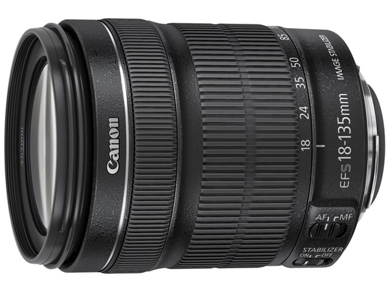

 具有高达约7.5倍变焦比的高倍率标准变焦镜头，其焦距换算为35mm规格后能够覆盖约29-216mm的视角。搭载的IS影像稳定器能够在广角端到远摄端的全焦段都得到最大相当于约4级快门速度的手抖动补偿效果，并可自动识别普通拍摄与追随拍摄，选择合适的IS模式。具有质感的变焦环与对焦环，给镜头带来了良好的操作感。镜头结构为12组16片，其中包含了1片非球面镜片以及1片UD（超低色散）镜片，对多种像差都能进行良好的补偿。优化的镜片配置和镀膜可以有效抑制鬼影和眩光的产生。最近对焦距离为约0.45米，配合强有效的手抖动补偿机构IS影像稳定器，能够满足从一般摄影到微距摄影的广泛需求。镜头不但覆盖了用户会频繁使用的焦段，并且保持了约455克的轻便镜身，而优化的自动对焦控制可以带来快速的自动对焦，是一款适合抓拍和旅行使用的镜头。
※此镜头仅限于套机形式，不单独销售。
| 镜头焦距 | 18-135mm |
|---|---|
| APS-C画幅下的35mm规格换算焦距 *1 | 约29-216mm |
| 镜头结构 | 12组16片 |
| 光圈叶片 | 6片（圆形光圈） |
| 最小光圈 *2 | 22-38 |
| 最近对焦距离 | 约0.45米 |
| 最大放大倍率 *3 | 约0.21倍 |
| 驱动系统 | DC马达 |
| 手抖动补偿效果 | 约4级 |
| 滤镜直径 | 67毫米 |
| 最大直径及长度 | 约Φ75.4×101毫米 |
| 重量 | 约455克 |